In fall 2024 a student sustainability grant revived the dormant Harvard Undergraduate Robotics Club, with the University Rover Challenge as its goal (Harvard Office for Sustainability). This was the club's first rover, and I designed its mechanical systems: the 5-DoF arm and its two grippers, the welded chassis, and the rocker-bogie suspension.
The full rover
Starting a rover from nothing meant the architecture had to come first. A rigid welded space frame forms the backbone, a passive six-wheel rocker-bogie keeps every wheel on uneven ground, and a long arm reaches out over the front corner for servicing and retrieval tasks.
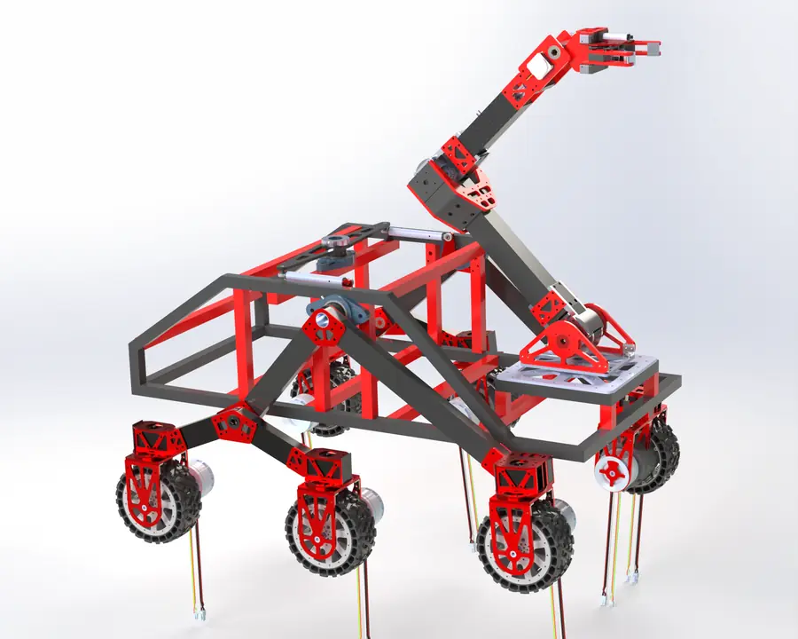
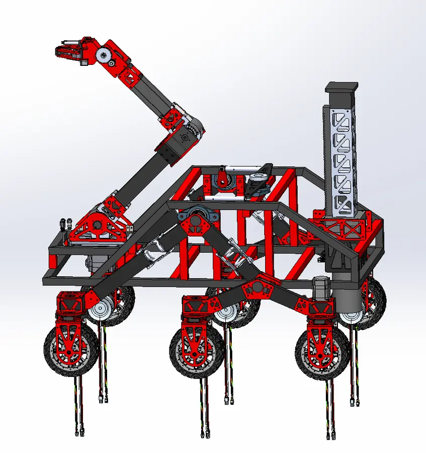
5-DoF robotic arm
This was the first robotic arm I ever designed. It is about 1.2 m long with a payload of around 3 kg, and every joint is driven by a stepper motor. The key decisions were the reductions, matching each joint's gearbox to the load it carries:
| Joint | Reduction | Reasoning |
|---|---|---|
| Base (yaw) | Planetary gearbox | Swings the arm's inertia but doesn't hold its weight against gravity. |
| Shoulder | Strain-wave gear | Largest gravity torque on the arm; backlash here is amplified across the full reach. |
| Elbow | Strain-wave gear | Second-largest torque; same need for a stiff, low-backlash, high-ratio stage. |
| Wrist 1 & 2 | Planetary gearboxes | Low torque at the tip, where small and light matters most. |
The structure is aluminum, mostly waterjet-cut with some milled and turned parts, together with carbon-fiber tube. It also makes extensive use of 3D-printed parts in Markforged Onyx and ABS-CF.
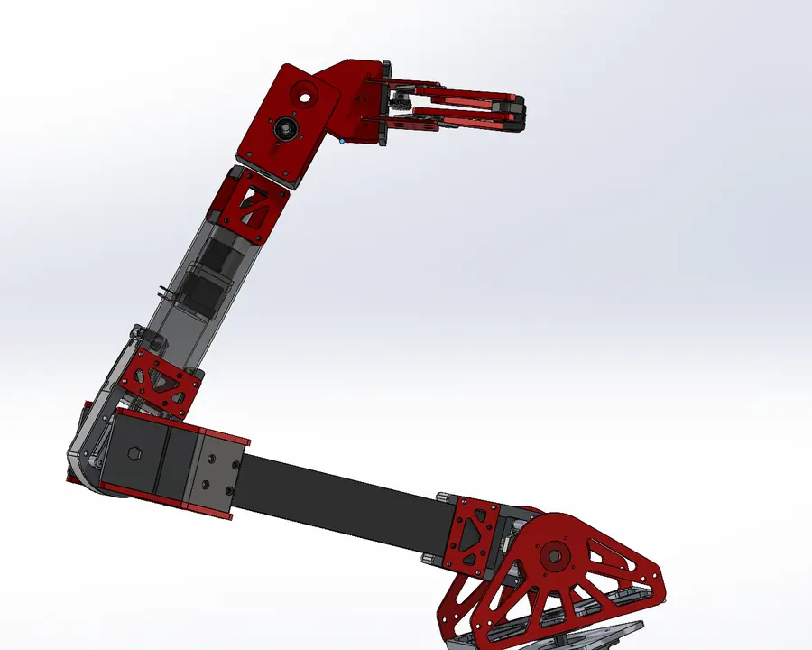
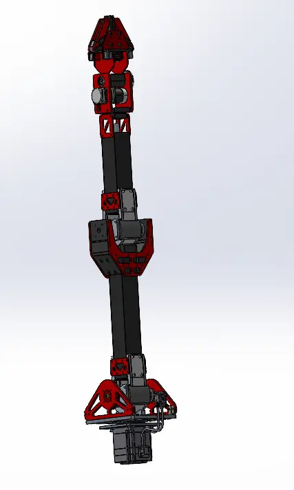
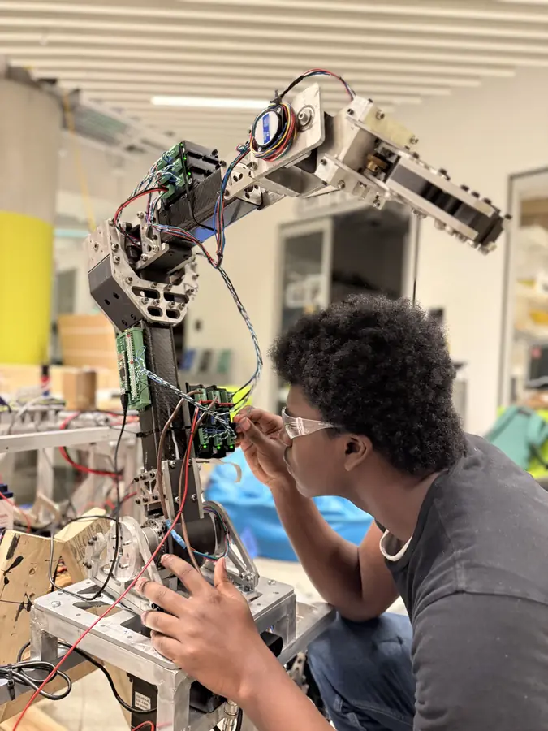
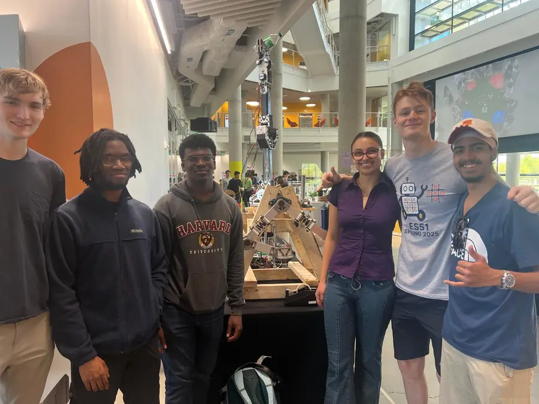
Grippers
Both grippers I designed for this arm are driven by a stepper motor through a worm gear. A worm drive packs a large reduction into a small space and is typically hard to back-drive, so the gripper holds its grip without constant motor torque. The first version had an enclosing grip that wraps around objects. The second used parallel jaws for more predictable contact. Both are mostly waterjet-cut aluminum.
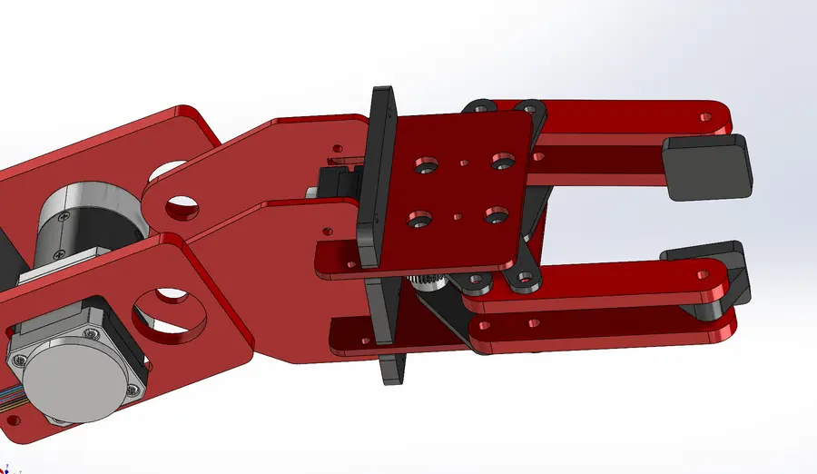
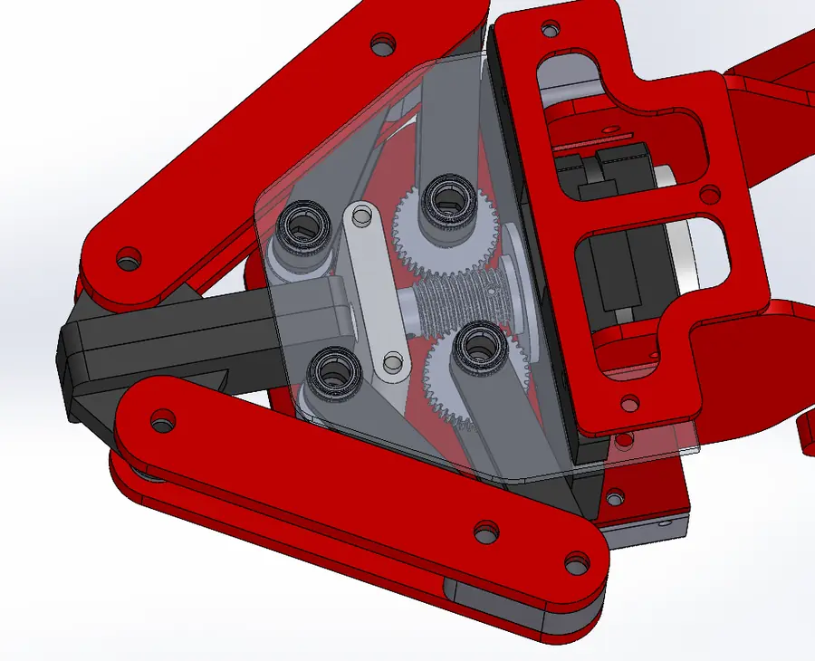
Welded chassis
The chassis is a welded space frame of 6061 aluminum box tube, TIG-welded. I validated it with SolidWorks static simulation for a load capacity of about 80 kg, sized to outlast this rover. It now carries the subsystems of both the 2024–25 and the 2025–26 rovers.
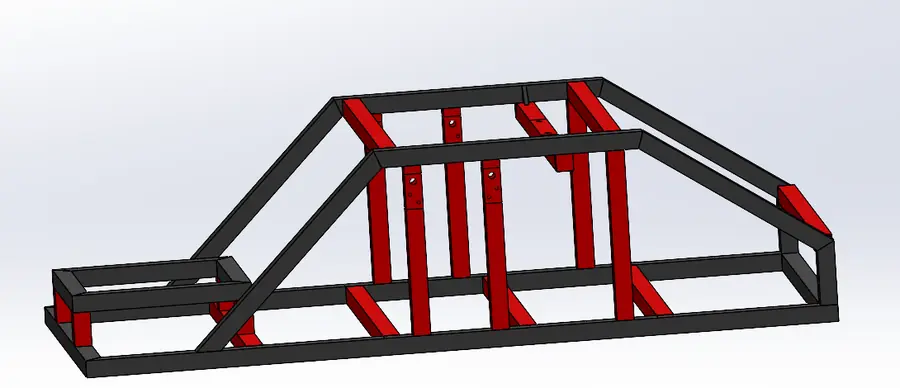
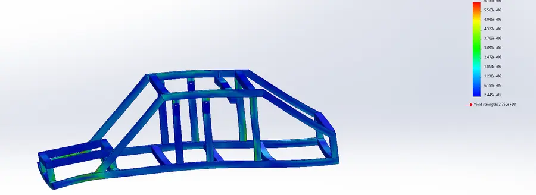
Rocker-bogie suspension
The drivetrain is a six-wheel rocker-bogie, the passive suspension NASA has used on its Mars rovers from Sojourner through Perseverance. Each side has a large rocker with a smaller bogie pivoting on one end, giving three wheels per side that all stay on the ground over uneven terrain without any springs. Each wheel is driven by a Maxon BLDC motor through a Flipsky 6.7 motor controller. The structure is aluminum box tube with ABS-CF printed fittings.
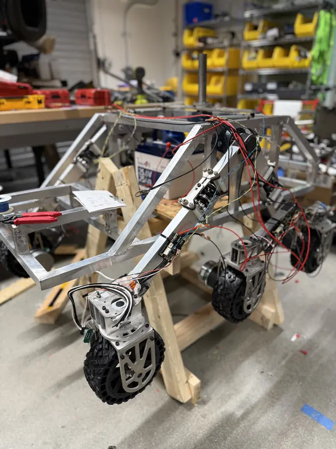
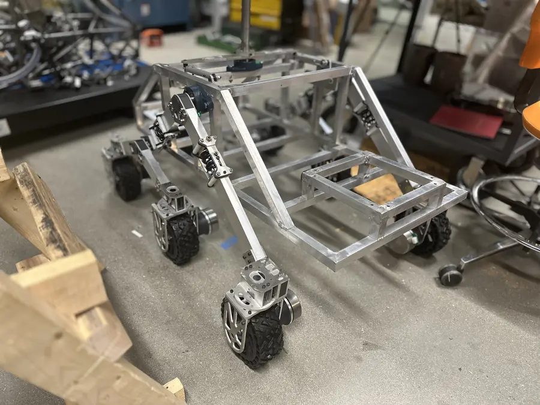
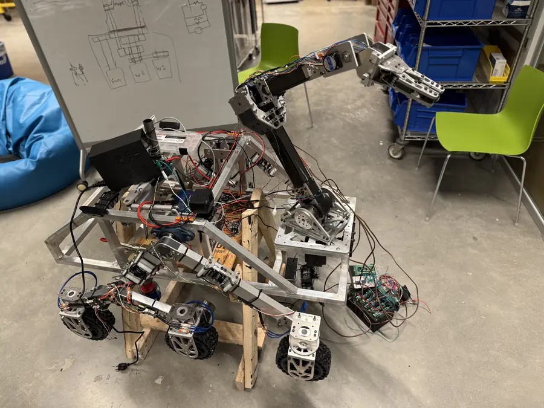
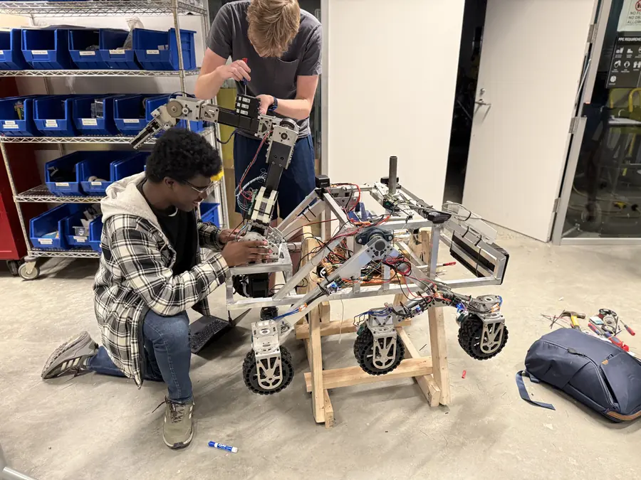